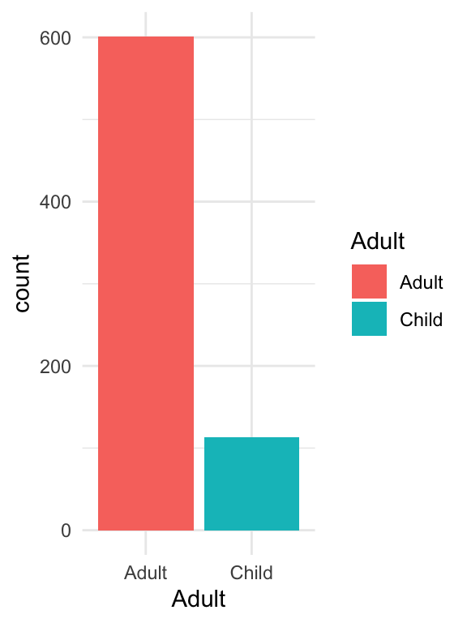

Chapter 5 Bearbejdning dag 1

5.1 Hvad er Tidyverse?
Tidyverse er en samling af pakker i R, som man bruger til at bearbejde datasæt. Formålet er ikke nødvendigvis at erstatte funktionaliteten af base-pakken, men til at bygge videre på den. Som vi vil se i detaljer, deler tidyverse faktisk mange af de samme principper som ggplot2 - men i stedet for at bruge + til at opbygge komponenter i et plot, bruger man %>% (udtales ‘pipe’) til at kæde forskellige funktioner sammen.
Most common tidyverse packages
Læringsmålene til i dag
I skal være i stand til at:
- Beskrive generelt, hvad R-pakken
Tidyversekan bruges til. - Beskrive en tibble og genkende når et datasæt er betragtet som “tidy”.
- Benytte nogle vigtige
Tidyverse-verbs til at bearbejde data (filter(),select(),mutate(),rename(),arrange(),recode()). - Bruge
%>%til at forbindeTidyverse-verber sammen og at overføre data til et plot.
5.2 Video ressourcer
__Begynd med at læse “Principper for ‘tidy data’” og “Lidt om tibbles” nedenfor og derefter se følgende videoer.
Video 1 - rydde op i datasættet
titanicmedselect()ogdrop_na()
Link her hvis det ikke virker nedenunder: https://player.vimeo.com/video/706266697
- Video 2 -
tidyverseverber:selectogfilter
Link her hvis det ikke virker nedenunder: https://player.vimeo.com/video/705136725
- Video 3 - flere
tidyverseverber- Lave en ny kolon med
mutate() - Ændre variabelnavne med
rename() - Ændre på værdierne med
recode() - Ændre rækkefølgen af observationerne med
arrange() - Bruge tidyverse kommandoer som input i
ggplot2()
- Lave en ny kolon med
Link her hvis det ikke virker nedenunder: https://player.vimeo.com/video/706266885
5.3 Oversigt over pakker
Lad os starte med at indlæse pakken tidyverse. Vær opmærksom på, at hvis du ikke allerede har pakken på din computer, kan det tage lidt tid at installere den da tidyverse er afhængig af mange andre pakker, som også skal installeres eller opdateres. Hvis du allerede har pakken installeret, men oplever problemer, skal du tjekke, om du har det seneste version af pakkerne og R på dit system.
#install.packages("tidyverse)
library(tidyverse)Du kan se, at der faktisk ikke kun er én, men otte pakker, der er blevet indlæst. Det er muligt at indlæse hver pakke individuelt ved at bruge fx library(dplyr), men det er meget bekvemt at indlæse dem alle på én gang ved at bruge library(tidyverse). Her er en kort beskrivelse af hver pakke:
| Pakke | Kort beskrivelse |
|---|---|
readr |
Indlæsning af data |
ggplot2 |
Plotning af data |
tibble |
Oprettelse af “tibbles” - tidyverse’s svar på datarammer (data.frame). |
tidyr |
Transformation af data til forskellige formater (fx fra ‘long’ til ‘wide’ format eller omvendt) |
purrr |
Functional programming, gentagelse |
dplyr |
Manipulation af tibbles - udvælgelse af undergrupper, oprettelse af nye variabler, beregning af oversigtsstatistikker osv. |
stringr |
Manipulation af strenge (ikke brugt i dette kursus) |
forcats |
Håndtering af faktorvariabler (også kaldet “categories”) |
5.4 Principper for ‘tidy data’
Idéen bag tidyverse er, at hvis alle datasæt følger præcis den samme struktur, så er det enkelt at bearbejde dem præcis som vi ønsker det. Datasæt med denne struktur kaldes “tidy data”. For at betragte et datasæt som “tidy” skal det opfylde tre kriterier:
- Hver variabel i datasættet har sin egen kolonne
- Hver observation i datasættet har sin egen række
- Hver værdi i datasættet har sin egen celle
Et godt eksempel på et datasæt i tidy format er Iris-datasættet:
data(iris)
head(iris)## Sepal.Length Sepal.Width Petal.Length Petal.Width Species
## 1 5.1 3.5 1.4 0.2 setosa
## 2 4.9 3.0 1.4 0.2 setosa
## 3 4.7 3.2 1.3 0.2 setosa
## 4 4.6 3.1 1.5 0.2 setosa
## 5 5.0 3.6 1.4 0.2 setosa
## 6 5.4 3.9 1.7 0.4 setosaI datasættet har hver variabel (Sepal.Length, Sepal.Width, Petal.Length, Petal.Width og Species) sin egen kolonne, og hver observation (fx observation 1, 2, 3, osv.) har sin egen række. Derudover har hver celle sin egen værdi, hvilket gør datasættet meget læsbart og let at forstå ved blot at kigge på det.

Principper af tidy data
Det er tilfældet, at de fleste datasæt i dette kursus hører til kategorien “tidy data”, især i disse notater, hvor vi bruger en del af de indbyggede datasæt. Nogle gange er det dog nødvendigt at transformere et datasæt til “tidy data”. R-pakkerne dplyr og tidyr er velegnede til at hjælpe med at transformere et datasæt til “tidy data”, og derefter kan man analysere datasættet på sædvanlig vis. Bemærk dog, at bare fordi et datasæt er “tidy”, betyder det ikke nødvendigvis, at det er klar til analyse, da der stadig kan være behov for yderligere bearbejdning med pakkerne dplyr og tidyr.
5.5 Lidt om tibbles
En tibble er tidyverse’s svar på en data.frame fra base-R. De ligner meget hinanden, og derfor behøver man ikke tænke så meget over forskellen. Men der er nogle opdaterede aspekter i en tibble. For eksempel bruger en tibble ikke row.names, og når man visualiserer en tibble i R Markdown, får man lidt ekstra oplysninger såsom dimensioner og datatyper. Det er vigtigt at bemærke, at de fleste tidyverse-funktioner fungerer lige så godt, uanset om man bruger en tibble eller en data.frame. Det er dog vigtigt at bemærke, at jeg vil bruge ordet “data frame” inden for almindelig tekst.
Man kan oprette sin egen tibble på samme måde som en data.frame.
tibble(x = 1:3, y = c("a", "b", "c"))## # A tibble: 3 × 2
## x y
## <int> <chr>
## 1 1 a
## 2 2 b
## 3 3 cMan kan også oprette en tribble, som er den samme som en tibble, men har en lidt anderledes måde at indsætte data på. For eksempel svarer følgende til den tidligere tibble:
tribble(~x, ~y,
1, "a",
2, "b",
3, "c")## # A tibble: 3 × 2
## x y
## <dbl> <chr>
## 1 1 a
## 2 2 b
## 3 3 cMan kan omdanne en data.frame til en tibble ved at bruge funktionen as_tibble(), som vist nedenfor:
as_tibble(iris)## # A tibble: 150 × 5
## Sepal.Length Sepal.Width Petal.Length Petal.Width Species
## <dbl> <dbl> <dbl> <dbl> <fct>
## 1 5.1 3.5 1.4 0.2 setosa
## 2 4.9 3 1.4 0.2 setosa
## 3 4.7 3.2 1.3 0.2 setosa
## 4 4.6 3.1 1.5 0.2 setosa
## 5 5 3.6 1.4 0.2 setosa
## 6 5.4 3.9 1.7 0.4 setosa
## 7 4.6 3.4 1.4 0.3 setosa
## 8 5 3.4 1.5 0.2 setosa
## 9 4.4 2.9 1.4 0.2 setosa
## 10 4.9 3.1 1.5 0.1 setosa
## # ℹ 140 more rows5.6 Transition fra base-R til tidyverse
Jeg introducerer tidyverse med et meget berømt datasæt kaldet Titanic. Det er ikke biologisk data, men det er stadig ret interessant og sjovt at arbejde med.
Titanic-datasættet er blevet brugt som en del af en åben konkurrence på Kaggle, hvor mindst 31.000 personer hidtil har arbejdet på at lave den bedste model til at forudsige, hvem der overlever katastrofen. Du kan læse mere om baggrunden for datasættet og konkurrencen på dette link: https://www.kaggle.com/c/titanic.
5.6.1 Om Titanic datasættet
Man kan downloade datasættet, der hedder titanic_train, direkte fra Kaggle. Men der er faktisk en R-pakke kaldet titanic, som gør det mere bekvemt:
#install.packages("titanic") #hvis ikke allerede installerede
library(titanic)Her er beskrivelsen for pakken:
titanic is an R package containing data sets providing information on the fate of passengers on the fatal maiden voyage of the ocean liner “Titanic”, summarized according to economic status (class), sex, age and survival. These data sets are often used as an introduction to machine learning on Kaggle.
Vi vil gerne bruge titanic_train-datasættet, fordi det er det datasæt, der bliver brugt på Kaggle til at træne maskinlæringsmodeller (som derefter bliver testet på titanic_test-datasættet for at evaluere, hvor god modellen er). For at gøre tingene nemmere, vil vi blot omdøbe titanic_train til titanic og bruge funktionen glimpse() fra dplyr-pakken til at se på datasættet.
titanic <- as_tibble(titanic_train)
glimpse(titanic)## Rows: 891
## Columns: 12
## $ PassengerId <int> 1, 2, 3, 4, 5, 6, 7, 8, 9, 10, 11, 12, 13, 14, 15, 16, 17,…
## $ Survived <int> 0, 1, 1, 1, 0, 0, 0, 0, 1, 1, 1, 1, 0, 0, 0, 1, 0, 1, 0, 1…
## $ Pclass <int> 3, 1, 3, 1, 3, 3, 1, 3, 3, 2, 3, 1, 3, 3, 3, 2, 3, 2, 3, 3…
## $ Name <chr> "Braund, Mr. Owen Harris", "Cumings, Mrs. John Bradley (Fl…
## $ Sex <chr> "male", "female", "female", "female", "male", "male", "mal…
## $ Age <dbl> 22, 38, 26, 35, 35, NA, 54, 2, 27, 14, 4, 58, 20, 39, 14, …
## $ SibSp <int> 1, 1, 0, 1, 0, 0, 0, 3, 0, 1, 1, 0, 0, 1, 0, 0, 4, 0, 1, 0…
## $ Parch <int> 0, 0, 0, 0, 0, 0, 0, 1, 2, 0, 1, 0, 0, 5, 0, 0, 1, 0, 0, 0…
## $ Ticket <chr> "A/5 21171", "PC 17599", "STON/O2. 3101282", "113803", "37…
## $ Fare <dbl> 7.2500, 71.2833, 7.9250, 53.1000, 8.0500, 8.4583, 51.8625,…
## $ Cabin <chr> "", "C85", "", "C123", "", "", "E46", "", "", "", "G6", "C…
## $ Embarked <chr> "S", "C", "S", "S", "S", "Q", "S", "S", "S", "C", "S", "S"…Jeg har også kopieret de variable beskrivelser her:
- PassengerId: unique index for each passenger
- Survived: Whether or not the passenger survived. 0 = No, 1 = Yes.
- Pclass: Ticket class: 1 = 1st Class, 2 = 2nd Class, 3 = 3rd Class.
- Name: A character string containing the name of each passenger.
- Sex: Character strings for passenger sex (“male”/ “female”).
- Age: Age in years.
- SibSp: The number of siblings/spouses aboard the titanic with the passenger
- Parch: The number of parents/children aboard the titanic with the passenger
- Ticket: Another character string containing the ticket ID of the passenger.
- Fare: The price paid for tickets in pounds Sterling (Keep in mind that unskilled workers made around 1 pound a week - these were expensive tickets!)
- Cabin: The cabin number of the passengers (character).
- Embarked: Where passengers boarded the titanic. C = Cherbourg, Q = Queenstown, S = Southampton).
5.6.2 Titanic: Rengøring
Før vi kan fortsætte med analysen, er der nogle oprydninger, der skal foretages i datasættet. Vi kan se fra glimpse(titanic)-kommandoen, at der er 891 observationer. De fleste passagerer (687) har faktisk intet oplyst i variablen Cabin:
sum(titanic$Cabin == "") # antal observationer med ingenting for variablen 'Cabin'## [1] 687Andre passagerer har mere end én cabin. Det ser ikke særlig tidy ud, og det er heller ikke særlig relevant for analysen, så vi vælger at fjerne hele kolonnen med funktionen select():
titanic_no_cabin <- select(titanic, -Cabin) select() er en af de grundlæggende funktioner i tidyverse. Her angiver vi, hvilke kolonner vi ønsker at beholde eller fjerne fra datasættet. I dette tilfælde har vi specificeret -Cabin, hvilket betyder, at vi ikke ønsker at medtage variablen Cabin, men vi ønsker at beholde resten af kolonnerne. Prøv selv at køre select(titanic, Cabin) i stedet - så vil vi kun have variablen Cabin og fjerne resten af vores variabler.
glimpse(titanic_no_cabin)## Rows: 891
## Columns: 11
## $ PassengerId <int> 1, 2, 3, 4, 5, 6, 7, 8, 9, 10, 11, 12, 13, 14, 15, 16, 17,…
## $ Survived <int> 0, 1, 1, 1, 0, 0, 0, 0, 1, 1, 1, 1, 0, 0, 0, 1, 0, 1, 0, 1…
## $ Pclass <int> 3, 1, 3, 1, 3, 3, 1, 3, 3, 2, 3, 1, 3, 3, 3, 2, 3, 2, 3, 3…
## $ Name <chr> "Braund, Mr. Owen Harris", "Cumings, Mrs. John Bradley (Fl…
## $ Sex <chr> "male", "female", "female", "female", "male", "male", "mal…
## $ Age <dbl> 22, 38, 26, 35, 35, NA, 54, 2, 27, 14, 4, 58, 20, 39, 14, …
## $ SibSp <int> 1, 1, 0, 1, 0, 0, 0, 3, 0, 1, 1, 0, 0, 1, 0, 0, 4, 0, 1, 0…
## $ Parch <int> 0, 0, 0, 0, 0, 0, 0, 1, 2, 0, 1, 0, 0, 5, 0, 0, 1, 0, 0, 0…
## $ Ticket <chr> "A/5 21171", "PC 17599", "STON/O2. 3101282", "113803", "37…
## $ Fare <dbl> 7.2500, 71.2833, 7.9250, 53.1000, 8.0500, 8.4583, 51.8625,…
## $ Embarked <chr> "S", "C", "S", "S", "S", "Q", "S", "S", "S", "C", "S", "S"…Næste skridt er at undersøge, om der er manglende værdier (NA) i datasættet. NA er, hvordan R betegner manglende værdier. Som det fremgår af følgende kode, har de fleste variabler ikke NA-værdier, men variablen Age har 177 NA-værdier.
colSums(is.na(titanic_no_cabin))## PassengerId Survived Pclass Name Sex Age
## 0 0 0 0 0 177
## SibSp Parch Ticket Fare Embarked
## 0 0 0 0 0I dette tilfælde vælger jeg at fjerne alle passagerer, der mangler aldersoplysninger (NA) i stedet for at estimere eller imputere deres alder. Til dette formål bruger jeg funktionen drop_na, som fjerner alle observationer, der har NA i mindst én variabel.
titanic_clean <- drop_na(titanic_no_cabin)
colSums(is.na(titanic_clean))## PassengerId Survived Pclass Name Sex Age
## 0 0 0 0 0 0
## SibSp Parch Ticket Fare Embarked
## 0 0 0 0 0Nu kan vi tjekke, hvor mange observationer og variabler, der er tilbage.
glimpse(titanic_clean)## Rows: 714
## Columns: 11
## $ PassengerId <int> 1, 2, 3, 4, 5, 7, 8, 9, 10, 11, 12, 13, 14, 15, 16, 17, 19…
## $ Survived <int> 0, 1, 1, 1, 0, 0, 0, 1, 1, 1, 1, 0, 0, 0, 1, 0, 0, 0, 1, 1…
## $ Pclass <int> 3, 1, 3, 1, 3, 1, 3, 3, 2, 3, 1, 3, 3, 3, 2, 3, 3, 2, 2, 3…
## $ Name <chr> "Braund, Mr. Owen Harris", "Cumings, Mrs. John Bradley (Fl…
## $ Sex <chr> "male", "female", "female", "female", "male", "male", "mal…
## $ Age <dbl> 22, 38, 26, 35, 35, 54, 2, 27, 14, 4, 58, 20, 39, 14, 55, …
## $ SibSp <int> 1, 1, 0, 1, 0, 0, 3, 0, 1, 1, 0, 0, 1, 0, 0, 4, 1, 0, 0, 0…
## $ Parch <int> 0, 0, 0, 0, 0, 0, 1, 2, 0, 1, 0, 0, 5, 0, 0, 1, 0, 0, 0, 0…
## $ Ticket <chr> "A/5 21171", "PC 17599", "STON/O2. 3101282", "113803", "37…
## $ Fare <dbl> 7.2500, 71.2833, 7.9250, 53.1000, 8.0500, 51.8625, 21.0750…
## $ Embarked <chr> "S", "C", "S", "S", "S", "S", "S", "S", "C", "S", "S", "S"…Vi har beholdt 714 observationer og 11 variabler, og datasættet opfylder kravene for at være tidy.
5.6.3 Pipe
Man kan faktisk opnå det samme som i ovenstående eksempel ved at bruge pipe %>%:
titanic_clean <- titanic %>% # vi tager titanic-datasættet
select(-Cabin) %>% # udvælger de ønskede kolonner
drop_na() # fjerner alle observationer med manglende værdierMan bruger pipe %>% til at kombinere adskillige Tidyverse-funktioner i samme kommando. Linjen slutter med %>%, som fortæller, at vi skal bruge resultatet fra den foregående linje som input i den næste linje. Logikken er således, at vi starter med en dataframe, gør én ting ad gangen og slutter med en ny dataframe (som vi kan gemme med <-).
Bemærk, at denne proces ligner den, man bruger i ggplot2, men forskellen er, at man bruger %>% i stedet for + i denne sammenhæng. Bemærk også, at jeg som i ggplot2 skriver koden over flere linjer. Det er ikke et krav, men det gør det nemmere at læse og forstå koden.
For at illustrere logikken kan man se, at følgende to linjer er tilsvarende:
#tag x og anvend en funktion f
f(x) #traditionelt tilgang
x %>% f #tidyverse tilgangI begge tilfælde starter vi med x og anvender derefter funktionen f på x. En stor fordel ved den tidyverse-tilgangen er, at når man har flere funktioner, undgår man at skulle bruge mange parenteser, og rækkefølgen, som funktionerne anvendes i, læses fra venstre mod højre i stedet for omvendt, som i følgende eksempel:
#tag x, anvend f, så g og til sidst h
h(g(f(x))) #traditionelt tilgang
x %>% f %>% g %>% h #tidyverse tilgangPå samme måde som i vores oprydning af titanic kan man både inkludere funktionen select() i drop_na() eller bruge tidyverse-tilgangen, som i følgende eksempel - de to giver samme resultat: Først fjerner vi kolonnen Cabin ved hjælp af select(), og derefter fjerner vi alle rækker, som har mindst én NA ved hjælp af drop_na().
titanic_clean <- drop_na(select(titanic,-Cabin))
titanic_clean <- titanic %>%
select(-Cabin) %>%
drop_na() 5.7 Bearbejdning af data: dplyr
Pakken dplyr er nok den mest brugbare pakke til at bearbejde dataframes. Jeg gennemgår nogle af de mest almindelige muligheder med pakken, og der er også en “cheatsheet” som du kan downloade som reference: https://github.com/rstudio/cheatsheets/raw/master/data-transformation.pdf. Jeg tager afsæt i følgende funktioner, og dækker flere gennem de forskellige øvelser og øvrige emner.
| dplyr verbs | beskrivelse |
|---|---|
select() |
udvælge kolonner (variabler) |
filter() |
udvælge rækker (observationer) |
arrange() |
sortere rækker |
mutate() |
tilføje eller ændre eksisterende kolonner |
rename() |
ændre variablers navne |
recode() |
ændre selve data |
group_by() |
dele datasættet op efter en variabel |
summarise() |
aggregere rækker, findes ofte tilknyttet til group_by() |
Bemærk, at alle disse funktioner tager udgangspunkt i en dataframe, og man får altid en ny dataframe som output. Ved at kunne bruge disse funktioner og kombinere dem (ved hjælp af %>%), har man godt styr på bearbejdningen af datarammer.
5.7.1 dplyr verbs: select()
Som vi lige har set ovenfor, kan man med select() udvælge bestemte variabler i en dataframe. Vi kan vælge at beholde, fjerne eller ændre rækkefølgen af variablerne. Som et eksempel kan vi beholde kun variablerne Name og Age i titanic_clean-dataframen ved at bruge følgende kode:
titanic_clean %>%
select(Name, Age) %>%
glimpse()## Rows: 714
## Columns: 2
## $ Name <chr> "Braund, Mr. Owen Harris", "Cumings, Mrs. John Bradley (Florence …
## $ Age <dbl> 22, 38, 26, 35, 35, 54, 2, 27, 14, 4, 58, 20, 39, 14, 55, 2, 31, …Hvis vi ønsker at fjerne en variabel fra en dataframe, kan vi bruge et minustegn. I nedenstående eksempel fjerner vi Name og Age fra titanic_clean-dataframen:
titanic_clean %>%
select(-Name, -Age) %>%
glimpse()## Rows: 714
## Columns: 9
## $ PassengerId <int> 1, 2, 3, 4, 5, 7, 8, 9, 10, 11, 12, 13, 14, 15, 16, 17, 19…
## $ Survived <int> 0, 1, 1, 1, 0, 0, 0, 1, 1, 1, 1, 0, 0, 0, 1, 0, 0, 0, 1, 1…
## $ Pclass <int> 3, 1, 3, 1, 3, 1, 3, 3, 2, 3, 1, 3, 3, 3, 2, 3, 3, 2, 2, 3…
## $ Sex <chr> "male", "female", "female", "female", "male", "male", "mal…
## $ SibSp <int> 1, 1, 0, 1, 0, 0, 3, 0, 1, 1, 0, 0, 1, 0, 0, 4, 1, 0, 0, 0…
## $ Parch <int> 0, 0, 0, 0, 0, 0, 1, 2, 0, 1, 0, 0, 5, 0, 0, 1, 0, 0, 0, 0…
## $ Ticket <chr> "A/5 21171", "PC 17599", "STON/O2. 3101282", "113803", "37…
## $ Fare <dbl> 7.2500, 71.2833, 7.9250, 53.1000, 8.0500, 51.8625, 21.0750…
## $ Embarked <chr> "S", "C", "S", "S", "S", "S", "S", "S", "C", "S", "S", "S"…5.7.1.1 Hjælper funktioner til select()
Hjælpefunktioner til funktionen select() kan være nyttige, hvis man vil udvælge bestemte variabler efter visse kriterier. Nedenfor har jeg samlet nogle (men ikke alle mulige!) hjælpefunktioner og inddrager eksempler i problemstillingerne.
| select hjælpefunktion | beskrivelse |
|---|---|
starts_with() |
starter med et præfiks |
ends_with() |
slutter med et præfiks |
contains() |
indeholder en tekststreng |
matches() |
matcher et regulært udtryk |
num_range() |
et numerisk interval såsom x01, x02, x03 |
one_of() |
variabler i en karaktervektor |
everything() |
alle variabler |
where() |
tager en funktion og returnerer alle variabler, hvor funktionen returnerer TRUE |
For eksempel:
titanic_clean %>% select(starts_with("P"))## # A tibble: 714 × 3
## PassengerId Pclass Parch
## <int> <int> <int>
## 1 1 3 0
## 2 2 1 0
## 3 3 3 0
## 4 4 1 0
## 5 5 3 0
## 6 7 1 0
## 7 8 3 1
## 8 9 3 2
## 9 10 2 0
## 10 11 3 1
## # ℹ 704 more rowsSpecielt brugbar i statistiske metoder, der kræver kun numeriske variabler, er where(), når den kombineres med is.numeric. For eksempel, i følgende kode udvælger man kun numeriske variabler fra datasættet titanic_clean:
titanic_clean %>% select(where(is.numeric))## # A tibble: 714 × 7
## PassengerId Survived Pclass Age SibSp Parch Fare
## <int> <int> <int> <dbl> <int> <int> <dbl>
## 1 1 0 3 22 1 0 7.25
## 2 2 1 1 38 1 0 71.3
## 3 3 1 3 26 0 0 7.92
## 4 4 1 1 35 1 0 53.1
## 5 5 0 3 35 0 0 8.05
## 6 7 0 1 54 0 0 51.9
## 7 8 0 3 2 3 1 21.1
## 8 9 1 3 27 0 2 11.1
## 9 10 1 2 14 1 0 30.1
## 10 11 1 3 4 1 1 16.7
## # ℹ 704 more rows5.7.2 dplyr verbs: filter()
Med funktionen select() udvælger man bestemte variabler. Til gengæld anvender man funktionen filter() til at udvælge bestemte observationer (rækker) fra en dataframe. I nedenstående eksempel beholder vi kun rækkerne, hvor variablen Age er lig med 50. Bemærk, at vi bevarer alle variabler i dataframe.
titanic_clean %>%
filter(Age == 50) %>%
glimpse()## Rows: 10
## Columns: 11
## $ PassengerId <int> 178, 260, 300, 435, 459, 483, 527, 545, 661, 724
## $ Survived <int> 0, 1, 1, 0, 1, 0, 1, 0, 1, 0
## $ Pclass <int> 1, 2, 1, 1, 2, 3, 2, 1, 1, 2
## $ Name <chr> "Isham, Miss. Ann Elizabeth", "Parrish, Mrs. (Lutie Davis)…
## $ Sex <chr> "female", "female", "female", "male", "female", "male", "f…
## $ Age <dbl> 50, 50, 50, 50, 50, 50, 50, 50, 50, 50
## $ SibSp <int> 0, 0, 0, 1, 0, 0, 0, 1, 2, 0
## $ Parch <int> 0, 1, 1, 0, 0, 0, 0, 0, 0, 0
## $ Ticket <chr> "PC 17595", "230433", "PC 17558", "13507", "F.C.C. 13531",…
## $ Fare <dbl> 28.7125, 26.0000, 247.5208, 55.9000, 10.5000, 8.0500, 10.5…
## $ Embarked <chr> "C", "S", "C", "S", "S", "S", "S", "C", "S", "S"Man kan også vælge intervallet af en variabel - for eksempel hvis man vil vælge alle, der er i halvtredserne.
titanic_clean %>%
filter(Age >= 50 & Age < 60) %>%
head()## # A tibble: 6 × 11
## PassengerId Survived Pclass Name Sex Age SibSp Parch Ticket Fare
## <int> <int> <int> <chr> <chr> <dbl> <int> <int> <chr> <dbl>
## 1 7 0 1 "McCarthy, M… male 54 0 0 17463 51.9
## 2 12 1 1 "Bonnell, Mi… fema… 58 0 0 113783 26.6
## 3 16 1 2 "Hewlett, Mr… fema… 55 0 0 248706 16
## 4 95 0 3 "Coxon, Mr. … male 59 0 0 364500 7.25
## 5 125 0 1 "White, Mr. … male 54 0 1 35281 77.3
## 6 151 0 2 "Bateman, Re… male 51 0 0 S.O.P… 12.5
## # ℹ 1 more variable: Embarked <chr>Man kan også kombinere betingelser fra forskellige kolonner, for eksempel i nedenstående eksempel vælger vi alle personer, som er kvinder og som rejste i første klasse.
titanic_clean %>%
filter(Sex == 'female' & Pclass == 1) %>%
head()## # A tibble: 6 × 11
## PassengerId Survived Pclass Name Sex Age SibSp Parch Ticket Fare
## <int> <int> <int> <chr> <chr> <dbl> <int> <int> <chr> <dbl>
## 1 2 1 1 Cumings, Mrs… fema… 38 1 0 PC 17… 71.3
## 2 4 1 1 Futrelle, Mr… fema… 35 1 0 113803 53.1
## 3 12 1 1 Bonnell, Mis… fema… 58 0 0 113783 26.6
## 4 53 1 1 Harper, Mrs.… fema… 49 1 0 PC 17… 76.7
## 5 62 1 1 Icard, Miss.… fema… 38 0 0 113572 80
## 6 89 1 1 Fortune, Mis… fema… 23 3 2 19950 263
## # ℹ 1 more variable: Embarked <chr>Vi kan også kombinere flere betingelser med forskellige symboler. For eksempel i nedenstående eksempel vælger vi personer, som er kvinder og som rejste i enten første eller anden klasse og som er i trediverne. Husk at tilføje runde parenteser omkring de to Pclass - prøv selv at fjerne dem og se, hvad der sker.
titanic_clean %>%
filter(Sex == 'female' & (Pclass == 1 | Pclass == 2) & Age %in% c(30:39)) %>%
glimpse()## Rows: 43
## Columns: 11
## $ PassengerId <int> 2, 4, 62, 99, 191, 212, 216, 219, 231, 258, 259, 270, 310,…
## $ Survived <int> 1, 1, 1, 1, 1, 1, 1, 1, 1, 1, 1, 1, 1, 1, 1, 1, 1, 0, 1, 1…
## $ Pclass <int> 1, 1, 1, 2, 2, 2, 1, 1, 1, 1, 1, 1, 1, 1, 2, 1, 2, 2, 1, 2…
## $ Name <chr> "Cumings, Mrs. John Bradley (Florence Briggs Thayer)", "Fu…
## $ Sex <chr> "female", "female", "female", "female", "female", "female"…
## $ Age <dbl> 38, 35, 38, 34, 32, 35, 31, 32, 35, 30, 35, 35, 30, 31, 30…
## $ SibSp <int> 1, 1, 0, 0, 0, 0, 1, 0, 1, 0, 0, 0, 0, 0, 0, 0, 0, 0, 1, 0…
## $ Parch <int> 0, 0, 0, 1, 0, 0, 0, 0, 0, 0, 0, 0, 0, 2, 0, 0, 0, 0, 0, 0…
## $ Ticket <chr> "PC 17599", "113803", "113572", "231919", "234604", "F.C.C…
## $ Fare <dbl> 71.2833, 53.1000, 80.0000, 23.0000, 13.0000, 21.0000, 113.…
## $ Embarked <chr> "C", "S", "", "S", "S", "S", "C", "C", "S", "S", "C", "S",…5.7.3 Sammenligningsoperatorer
Her er en tabel over sammenligningsoperatorer, som kan bruges i både filter() og i baseR (fordi konceptet bag er det samme, bare tilgangen er anderledes).
| Sammenligningsoperator | Beskrivelse |
|---|---|
< |
mindre end |
> |
større end |
<= |
mindre end eller lig med |
>= |
større end eller lig med |
== |
lig med |
!= |
forskellig fra |
& |
og |
%in% |
inkluderet i |
| |
eller |
5.7.4 Kombinere filter() og select()
Man kan også kombinere både filter() og select() i samme kommando, som i følgende eksempel:
titanic_clean %>%
filter(Sex == 'female' & (Pclass == 1 | Pclass == 2) & Age %in% c(30:39)) %>%
select(Name, Fare) %>%
glimpse()## Rows: 43
## Columns: 2
## $ Name <chr> "Cumings, Mrs. John Bradley (Florence Briggs Thayer)", "Futrelle,…
## $ Fare <dbl> 71.2833, 53.1000, 80.0000, 23.0000, 13.0000, 21.0000, 113.2750, 7…Bemærk at man skal være opmærksom på rækkefølgen, som man anvender de forskellige funktioner. Hvis man bytter rundt på filter() og select() i ovenstående eksempel, vil der opstå en advarsel. Prøv selv at køre følgende kode:
##virker ikke!!!!!#####
titanic_clean %>%
select(Name, Fare) %>%
filter(Sex == 'female' & (Pclass == 1 | Pclass == 2) & Age %in% c(30:39)) %>%
glimpse()Det skyldes, at hvis man først vælger at beholde variablerne Name og Age, så er de andre variabler ikke længere tilgængelige i den resulterende dataframe, som dernæst bruges i funktionen filter(). Derfor kan man ikke bruge funktionen filter() på variablerne Pclass,Sex og Age.
5.7.5 dplyr verbs: mutate()
Man kan bruge funktionen mutate() til at tilføje en ny variabel til en dataframe. I nedenstående eksempel tilføjer jeg en ny variabel med navnet Adult, der angiver om personen kan betragtes som voksen (hvis vedkommende er mindst 18 år gammel).
titanic_with_Adult <- titanic_clean %>%
mutate(Adult = Age>=18)
titanic_with_Adult %>% select(Adult) %>% glimpse()## Rows: 714
## Columns: 1
## $ Adult <lgl> TRUE, TRUE, TRUE, TRUE, TRUE, TRUE, FALSE, TRUE, FALSE, FALSE, T…Så kan man se, at der er 601 voksne og 113 børn som passagerere på skibet.
Bemærk, at jeg gemmer resultatet som en ny dataframe, der hedder titanic_with_Adult, og derefter bruger jeg glimpse() på det nye objekt titanic_with_Adult for at se, hvordan min nye dataframe ser ud. I forudgående eksempler havde jeg ikke gemt resultatet - jeg havde bare brugt glimpse() for at se resultatet på skærmen. Hvis du gerne vil bruge din resulterende dataframe videre, så skal du huske at gemme den (ved brug af <--tegnet).
funktionen ifelse() indenfor mutate()
Jeg kan oprette variablen Adult på en mere informativ måde end bare med TRUE eller FALSE. Jeg bruger funktionen ifelse(), som giver mulighed for at angive, at jeg gerne vil have teksten “adult”, hvis udsagnet Age>=18 er sandt, og hvis det er falsk, vil jeg have teksten “child”:
ifelse(Age>=18,"adult","child")Funktionen ifelse() bruges inden for mutate()-funktionen, fordi vi er i gang med at oprette en ny variabel, Adult - ifelse() giver os mulighed for at fortælle, hvordan den nye variabel skal se ud.
titanic_clean %>%
mutate(Adult = ifelse(Age>=18,"adult","child")) %>%
select(Age,Adult) %>%
glimpse()## Rows: 714
## Columns: 2
## $ Age <dbl> 22, 38, 26, 35, 35, 54, 2, 27, 14, 4, 58, 20, 39, 14, 55, 2, 31,…
## $ Adult <chr> "adult", "adult", "adult", "adult", "adult", "adult", "child", "…Så er variablen lidt mere informativ end før.
Opret nye variabler ud fra andre variabler
Man kan også oprette nye kolonner baseret på kombinationer af nogle af de eksisterende kolonner. For eksempel, lad os forestille os, at vi gerne vil have en ny kolonne, der viser summen af variablene Fare og Age, en der viser gennemsnittet af de to variabler, og en der hedder “Fare_per_year”. Det vises i følgende eksempel:
titanic_clean %>%
mutate("Fare_Age_sum" = Fare + Age,
"Fare_Age_mean" = Fare_Age_sum / 2,
"Fare_per_year" = Fare / Age) %>%
select(Age, Fare, Fare_Age_sum, Fare_Age_mean, Fare_per_year) %>%
glimpse()## Rows: 714
## Columns: 5
## $ Age <dbl> 22, 38, 26, 35, 35, 54, 2, 27, 14, 4, 58, 20, 39, 14, 55…
## $ Fare <dbl> 7.2500, 71.2833, 7.9250, 53.1000, 8.0500, 51.8625, 21.07…
## $ Fare_Age_sum <dbl> 29.2500, 109.2833, 33.9250, 88.1000, 43.0500, 105.8625, …
## $ Fare_Age_mean <dbl> 14.62500, 54.64165, 16.96250, 44.05000, 21.52500, 52.931…
## $ Fare_per_year <dbl> 0.3295455, 1.8758763, 0.3048077, 1.5171429, 0.2300000, 0…Det er klart, at fortolkningen af Fare_Age_mean måske ikke er særlig interessant, men der ville være mange situationer, hvor man gerne vil kombinere kolonner for at lave en bestemt beregning.
5.7.6 rename()
Man kan bruge rename() til at ændre navnet på en eller flere variable i datasættet. Som et eksempel bruger jeg rename() til at give en variabel navnet Years i stedet for Age (bemærk, at variablen Age ikke findes længere).
titanic_clean %>%
rename(Years = Age) %>%
glimpse()## Rows: 714
## Columns: 11
## $ PassengerId <int> 1, 2, 3, 4, 5, 7, 8, 9, 10, 11, 12, 13, 14, 15, 16, 17, 19…
## $ Survived <int> 0, 1, 1, 1, 0, 0, 0, 1, 1, 1, 1, 0, 0, 0, 1, 0, 0, 0, 1, 1…
## $ Pclass <int> 3, 1, 3, 1, 3, 1, 3, 3, 2, 3, 1, 3, 3, 3, 2, 3, 3, 2, 2, 3…
## $ Name <chr> "Braund, Mr. Owen Harris", "Cumings, Mrs. John Bradley (Fl…
## $ Sex <chr> "male", "female", "female", "female", "male", "male", "mal…
## $ Years <dbl> 22, 38, 26, 35, 35, 54, 2, 27, 14, 4, 58, 20, 39, 14, 55, …
## $ SibSp <int> 1, 1, 0, 1, 0, 0, 3, 0, 1, 1, 0, 0, 1, 0, 0, 4, 1, 0, 0, 0…
## $ Parch <int> 0, 0, 0, 0, 0, 0, 1, 2, 0, 1, 0, 0, 5, 0, 0, 1, 0, 0, 0, 0…
## $ Ticket <chr> "A/5 21171", "PC 17599", "STON/O2. 3101282", "113803", "37…
## $ Fare <dbl> 7.2500, 71.2833, 7.9250, 53.1000, 8.0500, 51.8625, 21.0750…
## $ Embarked <chr> "S", "C", "S", "S", "S", "S", "S", "S", "C", "S", "S", "S"…Man kan også ændre navnene på flere kolonner på én gang. For eksempel i følgende kode laver jeg nogle oversættelsesarbejde:
titanic_clean_dansk <- titanic_clean %>%
rename(Overlevede = Survived,
Navn = Name,
Klasse = Pclass)Så du kan se, at jeg har ændret variablenes navne. Jeg kalder den nye dataframe for titanic_clean_dansk, så min danske version er blevet gemt et sted.
Man kan også gøre sådan, at alle bogstaver i variablernes navne er små bogstaver. Jeg benytter den danske version, og jeg anvender rename_with() og specificerer tolower.
titanic_clean_dansk %>%
rename_with(tolower) %>% # alle variablernes navne er kun små bogstaver
glimpse()## Rows: 714
## Columns: 11
## $ passengerid <int> 1, 2, 3, 4, 5, 7, 8, 9, 10, 11, 12, 13, 14, 15, 16, 17, 19…
## $ overlevede <int> 0, 1, 1, 1, 0, 0, 0, 1, 1, 1, 1, 0, 0, 0, 1, 0, 0, 0, 1, 1…
## $ klasse <int> 3, 1, 3, 1, 3, 1, 3, 3, 2, 3, 1, 3, 3, 3, 2, 3, 3, 2, 2, 3…
## $ navn <chr> "Braund, Mr. Owen Harris", "Cumings, Mrs. John Bradley (Fl…
## $ sex <chr> "male", "female", "female", "female", "male", "male", "mal…
## $ age <dbl> 22, 38, 26, 35, 35, 54, 2, 27, 14, 4, 58, 20, 39, 14, 55, …
## $ sibsp <int> 1, 1, 0, 1, 0, 0, 3, 0, 1, 1, 0, 0, 1, 0, 0, 4, 1, 0, 0, 0…
## $ parch <int> 0, 0, 0, 0, 0, 0, 1, 2, 0, 1, 0, 0, 5, 0, 0, 1, 0, 0, 0, 0…
## $ ticket <chr> "A/5 21171", "PC 17599", "STON/O2. 3101282", "113803", "37…
## $ fare <dbl> 7.2500, 71.2833, 7.9250, 53.1000, 8.0500, 51.8625, 21.0750…
## $ embarked <chr> "S", "C", "S", "S", "S", "S", "S", "S", "C", "S", "S", "S"…Prøv også at erstatte tolower med toupper.
5.7.7 dplyr verbs: recode()
Med recode() kan man ændre hvordan en variable ser ud. For eksempel kan man ændre “male”/“female” til 0/1, som vist i følgende eksempel:
titanic_clean %>%
mutate(Sex = recode(Sex, "male" = 0, "female" = 1)) %>%
select(PassengerId,Name,Sex) %>% glimpse()## Rows: 714
## Columns: 3
## $ PassengerId <int> 1, 2, 3, 4, 5, 7, 8, 9, 10, 11, 12, 13, 14, 15, 16, 17, 19…
## $ Name <chr> "Braund, Mr. Owen Harris", "Cumings, Mrs. John Bradley (Fl…
## $ Sex <dbl> 0, 1, 1, 1, 0, 0, 0, 1, 1, 1, 1, 0, 0, 1, 1, 0, 1, 0, 0, 1…Bemærk, at funktionen recode() er blevet brugt indenfor funktionen mutate(). Jeg lavede en ny variable af samme navn, men med ændret værdier indenfor variablen.
Hvis man ønsker at ændre tilbage fra 0/1 til “male”/“female”, skal man skrive 1 / 0 for at specificere, at man har talværdier, og man ønsker at kalde dem for noget andet (“male”/“female” i dette tilfælde):
#recodes variable Sex and then recodes it back to original form again
titanic_clean %>%
mutate(Sex = recode(Sex, male = 1, female = 0)) %>%
mutate(Sex = recode(Sex, `1` = "male", `0` = "female")) %>% #note use of `` in the numbers
select(PassengerId,Name,Sex) %>% glimpse()## Rows: 714
## Columns: 3
## $ PassengerId <int> 1, 2, 3, 4, 5, 7, 8, 9, 10, 11, 12, 13, 14, 15, 16, 17, 19…
## $ Name <chr> "Braund, Mr. Owen Harris", "Cumings, Mrs. John Bradley (Fl…
## $ Sex <chr> "male", "female", "female", "female", "male", "male", "mal…Bemærk brugen af `` i tallene.
5.7.8 dplyr verbs: arrange()
Man anvender arrange() for at vælge rækkefølgen på observationerne. I nedenstående eksempel tager vi datarammen titanic_clean og arrangerer observationer efter variablen Fare. Det betyder, at personer, der har betalt mindst, vil være øverst i den resulterende dataramme, mens personer, der har betalt mest, vil være nederst.
# Arrange by increasing Fare
titanic_clean %>%
arrange(Fare) %>%
glimpse()## Rows: 714
## Columns: 11
## $ PassengerId <int> 180, 264, 272, 303, 598, 807, 823, 379, 873, 327, 844, 819…
## $ Survived <int> 0, 0, 1, 0, 0, 0, 0, 0, 0, 0, 0, 0, 0, 0, 0, 0, 0, 1, 0, 0…
## $ Pclass <int> 3, 1, 3, 3, 3, 1, 1, 3, 1, 3, 3, 3, 3, 3, 3, 3, 3, 3, 3, 3…
## $ Name <chr> "Leonard, Mr. Lionel", "Harrison, Mr. William", "Tornquist…
## $ Sex <chr> "male", "male", "male", "male", "male", "male", "male", "m…
## $ Age <dbl> 36.0, 40.0, 25.0, 19.0, 49.0, 39.0, 38.0, 20.0, 33.0, 61.0…
## $ SibSp <int> 0, 0, 0, 0, 0, 0, 0, 0, 0, 0, 0, 0, 0, 1, 0, 0, 0, 0, 1, 0…
## $ Parch <int> 0, 0, 0, 0, 0, 0, 0, 0, 0, 0, 0, 0, 0, 0, 0, 0, 0, 0, 0, 0…
## $ Ticket <chr> "LINE", "112059", "LINE", "LINE", "LINE", "112050", "19972…
## $ Fare <dbl> 0.0000, 0.0000, 0.0000, 0.0000, 0.0000, 0.0000, 0.0000, 4.…
## $ Embarked <chr> "S", "S", "S", "S", "S", "S", "S", "C", "S", "S", "C", "S"…Hvis man gerne vil have det omvendt - at personer som har betalt mest, skal være øverst i datarammen, kan man bruge desc() omkring Fare, som i nedenstående:
# Arrange by decreasing Fare
titanic_clean %>%
arrange(desc(Fare)) %>%
glimpse()## Rows: 714
## Columns: 11
## $ PassengerId <int> 259, 680, 738, 28, 89, 342, 439, 312, 743, 119, 300, 381, …
## $ Survived <int> 1, 1, 1, 0, 1, 1, 0, 1, 1, 0, 1, 1, 1, 1, 0, 1, 1, 1, 1, 1…
## $ Pclass <int> 1, 1, 1, 1, 1, 1, 1, 1, 1, 1, 1, 1, 1, 1, 1, 1, 1, 1, 1, 1…
## $ Name <chr> "Ward, Miss. Anna", "Cardeza, Mr. Thomas Drake Martinez", …
## $ Sex <chr> "female", "male", "male", "male", "female", "female", "mal…
## $ Age <dbl> 35.00, 36.00, 35.00, 19.00, 23.00, 24.00, 64.00, 18.00, 21…
## $ SibSp <int> 0, 0, 0, 3, 3, 3, 1, 2, 2, 0, 0, 0, 1, 0, 0, 0, 0, 0, 0, 1…
## $ Parch <int> 0, 1, 0, 2, 2, 2, 4, 2, 2, 1, 1, 0, 0, 0, 2, 1, 0, 1, 2, 1…
## $ Ticket <chr> "PC 17755", "PC 17755", "PC 17755", "19950", "19950", "199…
## $ Fare <dbl> 512.3292, 512.3292, 512.3292, 263.0000, 263.0000, 263.0000…
## $ Embarked <chr> "C", "C", "C", "S", "S", "S", "S", "C", "C", "C", "C", "C"…5.8 Visualisering: bruge som input i ggplot2
Efter man har udført bearbejdning med tidyverse-kommandoer, kan man specificere den resulterende dataramme som data i funktionen ggplot(). Man benytter %>%-operatoren til at forbinde dplyr-kommandoerne med ggplot-funktionen, og i dette tilfælde behøver man ikke at angive navnet på datarammen inde i ggplot-funktionen. I nedenstående eksempel tager jeg udgangspunkt i titanic_clean og laver et søjlediagram, som viser antallet af passagerer, der rejste i hver af de tre klasser.
titanic_clean %>%
ggplot(aes(x=Pclass,fill=as.factor(Pclass))) +
geom_bar(stat="count") +
theme_minimal()
Jeg gør det lidt mere kompliceret i følgende eksempel, hvor jeg tager udgangspunkt i titanic_clean, laver en ny kolonne kaldet Adult ved at bruge mutate(), og derefter bruger jeg den resulterende dataframe i ggplot() funktionen til at lave et plot, hvor jeg tæller antallet af voksne og børn:
titanic_clean %>%
mutate(Adult = ifelse(Age>=18,"Adult","Child")) %>%
ggplot(aes(x=Adult,fill=Adult)) +
geom_bar(stat="count") +
theme_minimal()
Så kan man se, at der var 600 voksne og lidt over 100 børn ombord på skibet.
5.9 Misc funktioner som er nyttige at vide
5.9.1 Pull
I tidyverse arbejder vi meget med dataframes. Tilgangen er, at man tager udgangspunkt i en dataframe, får en dataframe som resultat, og så arbejder videre på den dataframe. Nogle gange kan det dog være, at man gerne vil udtrække en variabel som en vektor fra en dataframe, fx hvis man gerne vil bruge den i en bestemt statistisk metode.
Her er et eksempel, hvor man udtrækker variablen Age for “male” og “female” (variablen Sex) og bruger de resulterende vektorer i en t-test:
ages_male <- titanic_clean %>% filter(Sex=="male") %>% pull(Age)
ages_female <- titanic_clean %>% filter(Sex=="female") %>% pull(Age)
t.test(ages_male,ages_female)##
## Welch Two Sample t-test
##
## data: ages_male and ages_female
## t = 2.5259, df = 560.05, p-value = 0.01181
## alternative hypothesis: true difference in means is not equal to 0
## 95 percent confidence interval:
## 0.6250732 4.9967983
## sample estimates:
## mean of x mean of y
## 30.72664 27.91571Så kan man se, at mænd og kvinder i gennemsnit har signifikant forskellige aldre (hvor mændene er ældre end kvinderne).
5.9.2 Slice
Med funktionen slice kan man vælge specifikke observationer i en dataframe. Følgende eksempel viser de to passagerer, der har betalt mest for deres billet (variabeln Fare).
titanic %>%
arrange(desc(Fare)) %>%
select(Name,Age) %>%
slice(1,2)## # A tibble: 2 × 2
## Name Age
## <chr> <dbl>
## 1 Ward, Miss. Anna 35
## 2 Cardeza, Mr. Thomas Drake Martinez 36Se udvidet muligheder her: https://dplyr.tidyverse.org/reference/slice.html
5.10 Problemstillinger
Problem 1) Lav quizzen på Absalon - “Quiz - tidyverse - part 1”
Vi øver os med datasættet Titanic. Indlæs datasættet og udfør den overstående oprydning med følgende kode:
library(tidyverse)
library(titanic)
titanic <- as_tibble(titanic_train)
titanic_clean <- titanic %>%
select(-Cabin) %>%
drop_na() %>%
mutate(Adult = ifelse(Age>=18,"adult","child")) %>%
mutate(Survived = recode(Survived, `1` = "yes", `0` = "no"))
glimpse(titanic_clean) #take a look!Problem 2) select(). Tag udgangspunkt i titanic_clean og fjern variablen Name (du behøver ikke at gemme din nye dataframe).
titanic_clean %>%
select(...) #redigere her- Tilføj også
glimpse()for at se et overblik (man kan også brugehead())
Problem 3) select(). Lav en ny dataframe ud fra titanic_clean med kun variabler Name, Pclass og Fare (du behøver ikke at gemme den).
- Gør det nogen forskel, i hvilken rækkefølge man skriver
Name,PclassogFare?
Problem 4) select() og hjælper funktioner. Tag udgangspunkt i titanic_clean. Hvad sker der, når man skriver starts_with("S") i stedet for at specificere bestemte kolonnenavne inden for select()?
Prøv også
contains("ar")Prøv også
-any_of(c("Survived","Pclass","FavouriteColour"))og-all_of(c("Survived","Pclass","FavouriteColour"))- Hvis man bruger
all_of(), så skal alle variable i vektorenc("Survived","Pclass","FavouriteColour")findes i datasættet, ellers vil man få en advarsel. - Hvis man bruger
any_of(), så vil alle variable fra vektorenc("Survived","Pclass","FavouriteColour"), som findes i datasættet, blive inkluderet, mens de andre variable vil blive ignoreret.
- Hvis man bruger
Prøv også
matches("^S[i|u]")- kan du gætte hvad det betyder (se nedenunder)?
Problem 5) filter(). Opret en ny dataframe ud fra titanic_clean med alle passagerer, der er mellem 10 og 15 år gammel og har rejst i enten første eller anden klasse (du behøver ikke at gemme den).
- Prøv at tilføje
%>% count()til kommandoen - Hvor mange observationer er der i din nye dataframe?
Problem 6) filter() og select() : kombinering med %>%
Opret en ny dataframe ud fra titanic_clean med alle passagerer, der er “male” og har overlevet (variablen Survived er “yes”), og vælg kun kolonnerne Name, Age og Fare.
Problem 7) filter() og select() kombinering med %>%
Opret en ny dataframe ud fra titanic_clean med kun variabler Name og Age og dernæst specificere kun de passagerer som er over 60.
- Få du så den samme sæt observationer hvis du skriver dine
select()ogfilter()funktionerne omvendt? Hvorfor?
Problem 8) Mutate(). Ud fra titanic_clean opret en ny kolonne, som hedder FareRounded og viser Fare rundet til det nærmest integar (hint: benyt funktionen round()).
Problem 9) Mutate(). Ud fra titanic_clean opret en ny kolonne, som hedder Mean_ID_Age og viser gennemsnittet af variablen PassengerId og variablen Age (se sektion Opret nye variabler ud fra andre variabler i kursusnotaterne hvis du er i tvivl).
Problem 10) mutate() og ifelse(). Opret en ny dataramme ud fra titanic_clean med en ny kolon som hedder Family som angiver TRUE hvis Parch er ikke nul, ellers FALSE.
- Anvend funktionen-
ifelse()til at gøre variablen mere intuitiv - “Family” og “Not family”.
Problem 11) Mutate() og ifelse()
Kig en gang til på beskrivelsen af følgende to variabler i datasættet:
SibSp: The number of siblings/spouses aboard the titanic with the passenger
Parch: The number of parents/children aboard the titanic with the passenger
- Tag udgangspunkt i
titanic_cleanog lav en ny variabelSolo, som viser “Ja”, hvis passageren rejste alene, og “Nej”, hvis passageren rejste med andre. - Brug
mutate()igen til at omdanne den nye variabel til en faktor. - Gem også din nye dataframe, så du kan bruge din nye variabel videre i næste spørgsmål.
titanic_clean <- titanic_clean %>% ... Problem 12) pull() og t.test() Betalt passagererne, der rejste alene (variablen Solo fra sidste opgave), i gennemsnit det samme for deres billet (variablen Fare) som passagererne, der ikke rejste alene? Lav en t-test (anvend filter() og så pull() to gange til at udtrække passende vektorer og bruger dem i t.test()-funktionen - se også eksempel i kursusnoterne hvis du er usikker).
Problem 13) Recode() I variablen Embarked:
- C står for Cherbourg
- Q står for Queenstown
- S står for Southampton
a) Anvend recode (indenfor mutate) til at ændre værdierne i variablen Embarked således at man får de fulde navne af de steder folk gik ombord skibet, i stedet for kun den første bogstav. Gem også dit output (som titanic_clean igen) så du kan bruge din nye variable videre.
b) Erstat recode-funktionen med recode_factor-funktionen og sammenlign datatypen af variablen Embarked i din nye dataframe.
c) Prøv at tilføje funktionen count() for at optælle hvor mange gik om bord i de forskellige steder.
- Prøv også med to variabler indenfor
count()-SoloogEmbarked
Resultatet ser sådan ud:
## # A tibble: 7 × 3
## Solo Embarked n
## <fct> <fct> <int>
## 1 No "Southampton" 229
## 2 No "Queenstown" 9
## 3 No "Cherbourg" 72
## 4 Yes "Southampton" 325
## 5 Yes "Queenstown" 19
## 6 Yes "Cherbourg" 58
## 7 Yes "" 2d) Man kan se, at der er to passagerer hvor der ikke er noget skrevet i Embarked.
- Rejste de alene?
- Gem din dataframe med de to passagerer fjernet.
Problem 14) Arrange(). Lav en ny dataramme ud fra titanic_clean med observationerne arrangerede således at de yngst er på toppen og ældste er på bunden. Kig på resultatet - hvad kan du fortælle om den yngste passager ombord skibet Titanic?
- Hvad kan du fortælle om den ældste passager ombord skibet? Overlevede de? Hvad med de andre ældste passagerer?
Problem 15) Arrange() og kombinering med andre verber. Lav en ny dataramme fra titanic_clean med kun personer med SibSp>0 og som gik ombord skibet i Southampton, arrangere de resulterende observationer efter Fare (højeste på toppen) og udvælg kun kolonnerne Name, Age og Fare.
Problem 16) Rename(). Fra titanic_clean udvælg kun variabler Survived,Ticket, og Name og ændre deres navne til Overlevede, Billet og Navn.
- Gør variabler navne til store bogstaver ved at anvende
rename_with().
Problem 17) Lave et plot. Fra titanic_clean bruge filter() til at lave en ny dataramme kun med personer under 30 og bruge den til at lave et barplot som viser antallet af personer opdelt efter Pclass. Bruge følgende struktur for koden:
titanic_clean %>%
filter(...) %>% #rediger linjen
ggplot(aes(...)) + .... #tilføj plotProblem 18) Lave et plot. Fra titanic_clean, bruge mutate() til at lave et nyt kolon der hedder with_siblings_spouses der er TRUE hvis SibSp ikke er nul. Brug den til at lave boxplots som viser Fare på y-aksen og with_siblings_spouses på x-aksen.
- Ekstra: Ændre skalen på y-aksen for at gøre plottet klarer at fortolke.
5.11 Kommentarer
matches("^S[i|u]")betyder^Svariabel navn skal starter med en S[i|u]den næste bogstav i variabel navnet skal være enten i eller u
- OBS det er ikke vigtigt at lære pattern matching i kurset men det er meget brugbart i andre sammenhænge!
Næste gange arbejder vi videre med tidyverse.
- Group_by kombinerede med Summarise
- Pivot_Longer/Pivot_Wider
- Join funktionerne